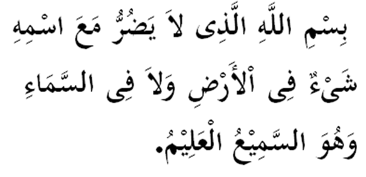

|
Terjemahan "(Kami ucapkan) Dengan nama Allah yang segala sesuatu di langit mahupun di bumi tidak akan memberikan apa-apa mudharat selama bersama dengan namaNya. Dan Allah Maha Mendengar dan Maha Mengetahui." Fadhilat Wirid Daripada Uthman bin Affan (RA): Mana-mana hamba Allah (SWT) yang membaca tiap-tiap pagi dan petang hari (bacaan di atas) sebanyak tiga kali insyaAllah tidak akan ditimpa keatasnya bahaya. (Hadith riwayat Abu Daud dan Tirmidzi) |

|